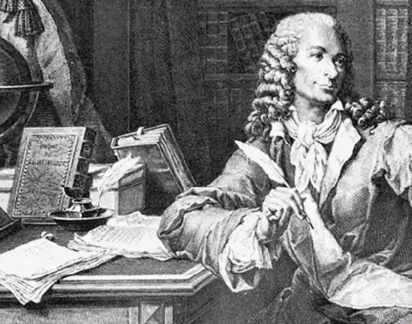
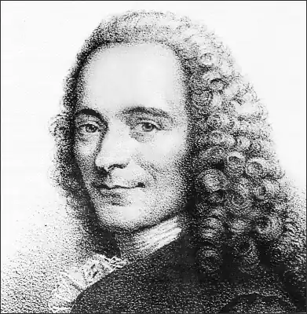

ВОЛЬТЕР, (Voltaire; автонім: Аруе, Марі Франсуа — 21.11.1694, Париж — 30.05 1778, там само) — французький письменник, історик і філософ.Батько Вольтера був багатим буржуа, нотаріусом. Вольтер здобув освіту в єзуїтському колежі Людовіка XIV, а поті1., у школі правознавства. За сатиру на регента Франції герцога Орлеанського був ув'язнений у Бастилії, де провів майже рік. Там він створив трагедію "Едіп" ("Edipe", 1718), яка мала гучній успіх. Вольтер (саме цим іменем він підписав п'єсу) вже тоді пророчили славу Корнеля.
Волелюбні настрої поета відображені в поемі "Ліга, або Генріх Великий" ("La ligue ou Henri le Grand", 1723), надрукованій за кордоном. За виклик на дуель аристократа де Рогана Вольтера ув'язнили в Бастилію, а потім вигнали з Франції. Три роки він провів в Англії, де вивчав праці Дж. Локка та І. Ньютона, творчість В. Шекспіра. Після повернення у Париж опублікував "Лисро англійську націю" ("Letters concerning the english nation", 1731), засуджені паризьким парламентом до спалення, оскільки в книзі прославлявся англійський державний устрій і засуджувалася система французького абсолютизму.
Близько п'ятнадцяти років Вольтер прожив у Сіреї своєї приятельки маркізи де Шатле. Тут він створив праці з історії, трактати з математики та філософії, трагедії, комедії, поеми, повісті.Прусський король Фрідріх II писав: "Ні, звичайно, це не одна людина здійснює ту подиву гідну роботу, яку приписують пану Вольтеру. В Сіреї проживає ціла академія, складена з найобраніших людей. Там живуть філософи, котрі перекладають Ньютона, епічні поети, Корнелі, Катулли, Фукідіди, і праці цієї Академії публікуються у світ під ім'ям Вольтера, так само як перемоги цілої армії приписуються одному полководцю". У Сіреї Вольтер написав цикл філософських повістей, знамениті трагедії "Заїра"("Zaire", 1732) і "Фанатизм, або Пророк Магомет" ("Le fanatisme ou le Prophete Mahomet", 1742), сатиричну поему "Орлеанська діва" ("La pucelle d'Orleans", 1730-1735) та ін. Після смерті в 1749 р. Емілії дю Шатле Вольтер прийняв запрошення Фрідріха II, мріючи втілити ідеал просвітників — створити модель освіченого абсолютизму. Проживаючи в Потсдамі, він написав ряд статей для "Енциклопедії" Д. Діцро і Ж. Д'Аламбера. Перебування у Пруссії закінчилося скандалом, і Вольтер залишив двір Фрідріха. У 1755 р. він купив маєток Ферней на кордоні Франції та Швейцарії. Дім Вольтера став місцем паломництва інтелектуальної еліти Європи. У Фернеї він продовжив цикл філософських повістей, написав "Історію Росії за царювання Петра Великого" ("L'Histoire de la Russie sous Pierre le Grand", 1759—1763), декілька філософських лоєм і трагедій, створив "Філософський словник" "Dictionnaire philosophique", 1764) і т. д. Звідси він звертався до суспільної думки Європи, захищаючи безневинно засуджених Ж. Каласа і юного де Ла Бара. У Європі його шанобливо величали "королем Вольтером". У 1778 р. письменник приїхав у Париж, де його зустріли з тріумфом. Проте через три місяці Вольтер помер, з тіло його за наказом уряду було перевезено з Шампань і поховано в абатстві Сельєр. У1791 р. прах Вольтера перенесено в Пантеон, а на його могилі викарбовано: "Він підготував нас до свободи". В. Гюґо зауважив якось: "Вольтер не тільки людина, це ціла епоха". І в цих словах криється значна частка істини. Невипадково французи часто називають XVIII ст. "століттям Вольтера". Він з повним правом вважався патріархом просвітників. Як ніхто інший, Вольтер освітив своїм генієм вік Просвітництва, заледве чи не всі тогочасні мислителі вважали себе його учнями. Будучи некоронованим королем буржуазії, і до того ж не лише французької, але й всеєвропейської, Вольтер боровся проти станової нерівності, за право людини на власну думку і людську гідність. Його творчість безмежна, а кількість творів вражає. Вже у XVIII ст. П.О.К. де Бомарше видав два зібрання його творів — у 70 і 90 томах! Особисто Вольтер жартував, що не віддає переваги жодній з муз, а любить усіх. Став хрестоматійним вислів Вольтера: "Усі жанри добрі, крім нудного", і здається, що він віддав данину любові усім "ненудним" жанрам. Вольтер — один із творців сучасної історіографії. З його іменем пов'язане виникнення понять історичного факту та історизму, що відобразилось на подальшому розвитку не лише науки, а й літератури. Своїм завданням він вважав — створити історію народів. Історію він вважав наукою моральною, оскільки віковічний процес — це боротьба розуму та забобонів. Сучасники називали Вольтера королем поетів. Він виступав у різних поетичних жанрах, створюючи епічні, іроїкомічні, філософські поеми, оди і політичні сатири, епіграми та ліричні вірші.Як ліричний поет, Вольтер менш значний. Набагато талановитіший він в епіграмах, сатирах, комічних поемах. І невипадково вершиною його поетичної творчості стала поема "Орлеанська діва" — своєрідна пародія на твір офіціозного поета XVII ст. Ж. Шаплена "Діва, або Визволена Франція" (1656). Твір В. спрямований перш за все супроти офіційної церкви. Проте водночас поет карикатурно змалював національну героїню Франції Жанну Д'Арк. Вольтер був також першим драматургом епохи, створивши понад 50 трагедій, комедій, дивертисментів, оперних лібрето. Як і в поезії, в галузі драматургії він був послідовним класицистом, хоча й враховував досвід англійського театру. Визнаними шедеврами Вольтера стали трагедії "Заїра" і "Магомет", у яких йдеться про людські долі, зневажені релігійною нетерпимістю і деспотизмом. У певному плані театр Вольтера — це трибуна його ідей. Одним із перших він звернувся до змалювання Сходу, що для романтиків стане вже одним із основоположних принципів. З величезної художньої спадщини Вольтера найвідомішими є "Філософські повісті" ("Romans et contes philosophiques"), які він писав упродовж тривалого часу — з 1747 по 1775 pp. До них, зокрема, ввійшли "Задіг, або Доля" ("Zadig ou la Destinee", 1747), "Мемнон, або Людська розсудливість" ("Memnon ou La sagesse humaine", 1747), "Мікромегас" ("Le micromegas", 1752), "Кандід, або Оптимізм" ("Candide, ou l'Optimisme", 1759), "Простак" ("L'Ingenu", 1767), "Вавилонська царівна" ("La princesse de Babylone", 1768). Перша філософська повість Вольтера "Задіґ" "побачила світ у 1747 р. Умовно орієнтальний колорит повісті цілком відповідав смакам людей XVIII ст., які зачитувалися знаменитими арабськими казками. Східна тема цікавила й родоначальника французького Просвітництва Ш. Монтеск'є ("Перські листи") і багатьох інших авторів. Звернення до Сходу, окрім наміру показати екзотичний колорит, що так вабив читачів, давало Вольтеру можливість говорити "езоповою мовою" про проблеми сучасної Франції. Створення жанру філософської повісті спричинене прагненням поєднати образно-сатиричне змалювання дійсності з філософським змістом. Класицист за вихованням і смаками, Вольтер відійшов у "Філософських повістях "від правил класицизму. Створивши новий жанр, він втілив один із основних принципів просвітників: "Повчати, розважаючи". Витоки жанру філософської повісті Вольтер знаходять у "Перських листах" ПІ. Монтеск'є і в творах англійського Просвітництва, особливо у творах Дж. Свіфта — не лише автора "Мандрів Гуллівера", а й "Казки про бочку". Проте Вольтер і сам є надзвичайно оригінальним прозаїком: наслідуючи чужі традиції, він проявив себе справжнім новатором. За основу він брав жанр популярного в XVII—XVIII ст. любовно-авантюрного роману. Книжковий ринок XVIII ст. наповнили сотні слізливих романів про пригоди бідних закоханих. Це була своєрідна "масова культура" епохи Просвітництва. Звертаючись до цього жанру, Вольтер розв'язував дві задачі: по-перше, він залучив до своїх творів широкий читацький загал, а по-друге, своїм сміхом він знищував цей жанр, позбавляв його права на існування. Взявши за основу такий популярний, але цілковито безідейний жанр, Вольтер наповнив його філософським змістом. Зі старими філософськими та соціальними системами, літературними жанрами Вольтеррозправлявся з допомогою сміху. За словами літературознавця О. Михайлова, "героями цих творів при всьому їхньому розмаїтті, наповненні найрізноманітнішими подіями та діючими особами виявляються не звичні нам персонажі, з індивідуальними характерами, власними долями, неповторними портретами і т. д., а та чи інша політична система, філософська доктрина, кардинальне питання людського буття." Головне питання, яке хвилює письменника, це співвідношення добра і зла у світі, вплив цих сил на людські долі. Чітка поляризація добра і зла призводить до певного схематизму і спрощення характерів. Це, звичайно, не свідчить про якусь творчу "неміч" Вольтера, а підтверджує те, що перед письменником постали зовсім інші художні завдання, які він вирішував згідно з вимогами створеного ним жанру. Творча та просвітницька спадщина Вольтера не пройшла повз увагу й української літератури та культури. У книгах "Історія Карла XII" (1731) та "Історія Росії за Петра Великого" Вольтер згадував про Україну. Т. Шевченко у повісті "Прогулка с удовольствием и не без морали" іронізував з приводу книги "Листування Катерини Великої з Вольтером" (1803), де виявилися суперечливі філософські й історичні погляди Вольтера. І. Франко, зокрема, захоплювався сарказмом, іронічним скептицизмом та цинізмом, якими пройняті дотепні епіграми, шаржі, каламбури письменника. Леся Українка радила членам "Плеяди" перекладати твори Вольтера. Окремі епіграми та вірші Вольтера переклали П. Грабовський, X. Алчевська. Комедію "Наніні" у 1885 — 1896 pp. було поставлено на сцені Харківського Вільного театру. Українською мовою повість "Кандід" у 1927 р. переклав В. Підмогильний, а в 1955 р. — М. Терещенко; "Вибрані твори" (1932) — Л. Івченко. "Орлеанську діву" (1937) — М. Рильський. В. Пронін